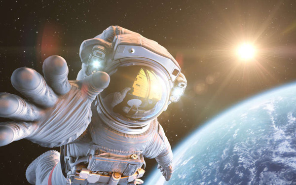
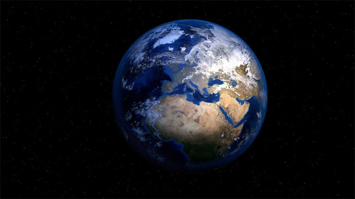
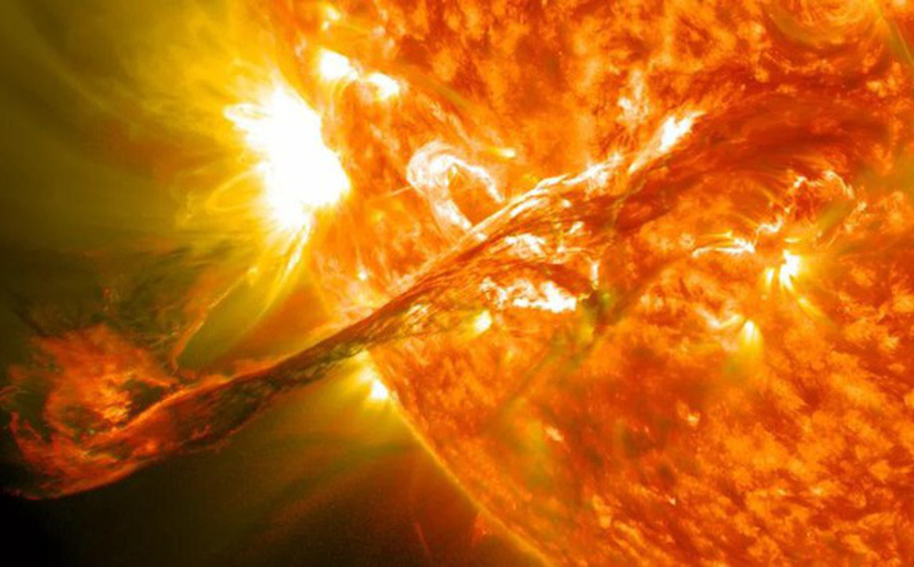
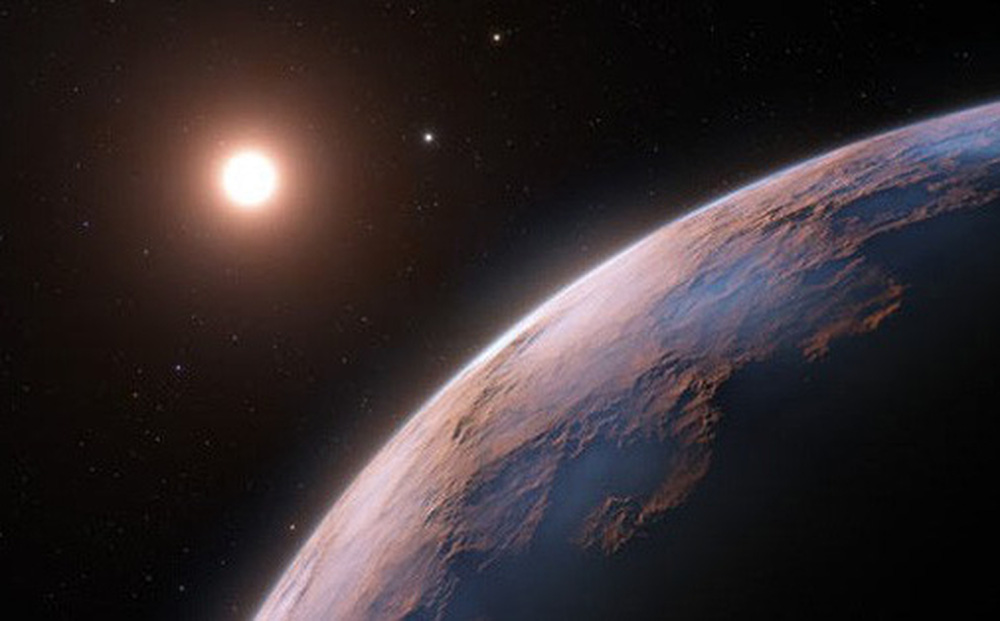
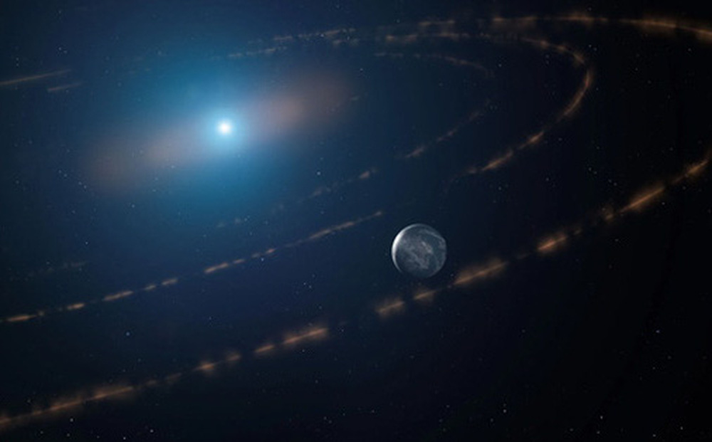
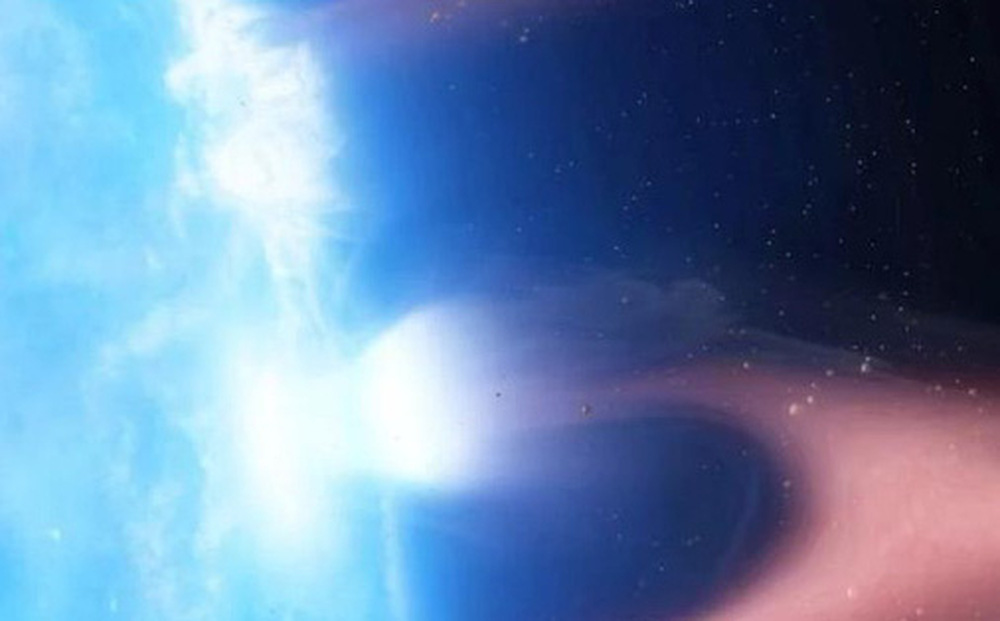
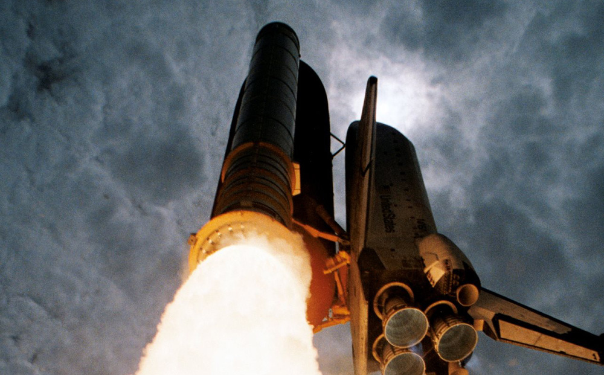

-

Trái Đất có "vật chất ở chiều không gian khác", giới khoa học bối rối suốt 90 năm.
Vật chất tồn tại ở 4 trạng thái rắn, lỏng, khí và plasma có thể là một định nghĩa cần xem xét lại. Có một thứ vật chất thuộc về trạng thái "lửng lơ" chính giữa rắn và lỏng đang tạo nên trái tim của Trái Đất.
Theo Science Alert, từ những năm 1930, các nhà khoa học đã đưa ra bằng chứng gián tiếp cho thấy lõi Trái Đất là một quả cầu rắn. Từ đó, kết cấu lõi trong rắn, lõi ngoài lỏng được chấp nhận rộng rãi.
Đó là những gì nghiên cứu dẫn đầu bởi tiến sĩ Yu He từ Học viện Khoa học Trung Quốc đưa ra.
Tuy nhiên cũng có những dữ liệu sóng địa chấn cho thấy lõi bên trong rất mềm. Sự bất nhất này có thể do lõi hành tinh chúng ta là một thứ vật chất không hiện hữu trên mặt đất, không phải rắn cũng không phải lỏng.
-

Bão mặt trời cổ đại đã từng tấn công Trái đất.
Một cơn bão mặt trời cực mạnh đã tấn công hành tinh của chúng ta 9.200 năm trước, để lại những vết sẹo vĩnh viễn trên lớp băng bị chôn sâu dưới Greenland và Nam Cực.
Một nghiên cứu mới về các mẫu băng cổ đại đã phát hiện ra rằng, cơn bão chưa từng được biết đến trước đây là một trong những đợt bùng phát thời tiết Mặt trời mạnh nhất từng được phát hiện và sẽ làm tê liệt các hệ thống thông tin liên lạc hiện đại nếu nó tấn công Trái đất ngày nay.
Trong nghiên cứu, các tác giả đã xem xét phần sau, phân tích một số lõi.
Nhưng có lẽ đáng ngạc nhiên nhất, cơn bão lớn này dường như đã tấn công vào thời điểm cực tiểu của mặt trời, thời điểm trong chu kỳ 11 năm của mặt trời khi các đợt bùng phát năng lượng mặt trời thường ít phổ biến hơn nhiều, theo nghiên cứu được công bố ngày 11/1 trên tạp chí Nature Communications.
-

Hành tinh sáng như kim cương bay cạnh "Trái Đất 2 mặt có sự sống".
Hệ sao gần chúng ta nhất Proxima Centauri tiếp tục hé lộ một hành tinh thứ 3 bí ẩn, với những chi tiết thú vị không kém cạnh "Trái Đất 2 mặt" Proxima Centauri b được giới thiên văn "săn sóc chu đáo" nhiều năm qua.
Theo Sci-News, đây sẽ là một trong những ngoại hành tinh nhỏ nhất từng được ghi nhận. Thế giới với tên Proxima Centauri d, nằm trong hệ sao lùn đỏ Proxima Centauri cách chúng ta chỉ 4,2 năm ánh sáng.
Proxima Centauri d cũng là ngoại hành tinh sáng nhất từng được quan sát, lấp lánh như một viên kim cương vũ trụ và gần như chìm lấp vào ánh sáng của sao mẹ, bởi nó quay cực gần sao mẹ (cách 4 triệu km, 1/10 khoảng cách Mặt Trời - Sao Thủy), chỉ mất 5 ngày để hoàn tất 1 quỹ đạo.
Đó là một hành tinh đá với khối lượng chỉ khoảng 1/4 Trái Đất, đồng nghĩa với việc nó cực nhỏ.
-

"Xác sống vũ trụ" vừa sinh ra hành tinh có thể sống được.
Hành tinh gây sốc vẫn đang ẩn nấp trong các mảnh vụn cấu trúc mặt trăng quanh một ngôi sao lùn trắng cách chúng ta 118 năm ánh sáng.
Sử dụng thiết bị ULTRACAM trên Kính viễn vọng Công nghệ mới 3,5 m của Đài thiên văn Nam Âu (ESO) đặt tại Đài quan sát La silla ở Chile và Vệ tinh Khảo sát ngoài hành tinh TESS của NASA, các nhà thiên văn học dẫn đầu bởi giáo sư Jay Farhi từ Đại học London (Anh) đã ghi lại những thay đổi ánh sáng đáng chú ý từ ngôi sao lùn trắng WD 1054-226, theo tờ Sci-News.
Dựa vào các tính chất của ngôi sao trung tâm, hành tinh này phải nằm trong vùng sự sống Goldilocks của hệ sao.
Họ phát hiện ra những vệt sáng rõ rệt tương ứng với 65 đám mây mảnh vụn hành tinh cách đều nhau, quay quanh ngôi sao sau mỗi 25 giờ. Các mảnh vụn này có kích thước và cấu trúc như mặt trăng, sắp xếp thành vòng.
-

Đài thiên văn chụp được "xác sống" ăn thịt hành tinh: Tương lai Trái Đất?
Lần đầu tiên các nhà khoa học đã nắm bắt được bằng chứng rõ ràng về một ngôi sao lùn trắng đang xé toạc và nuốt từng phần hành tinh của chính nó.
Sử dụng dữ liệu từ Đài quan sát tia X Chandra, một nhóm khoa học gia đã xác định được hiện tượng vật chất của một hành tinh dần di chuyển vào bầu khí quyển của một sao lùn trắng, là ngôi sao mẹ đã chết của nó. Đó là sao lùn trắng G 29-38, nằm cách xa chúng ta 57 năm ánh sáng, đã chết từ 600 triệu năm trước, theo Science Alert.
Trước đây, người ta từng quan sát thấy sao lùn trắng hoạt động như một ma cà rồng trong các hệ nhị phân, hút vật chất của ngôi sao đồng hành, nhưng đây là lần đầu tiên thấy nó ăn thịt.
Sao lùn trắng là một dạng "zombie" - "xác sống" - của vũ trụ. Đó là lõi thu gọn của một ngôi sao đã chết, tức đã cạn kiệt nhiên liệu, nhưng không hẳn đã ngừng hoạt động.
-

Thập kỷ 'lột xác' kinh ngạc của Trung Quốc: Chi bội tiền để vượt Mỹ.
Chỉ tính riêng lĩnh vực chinh phục không gian, Trung Quốc đã khiến phương Tây nhiều lần kinh ngạc!
Hành trình thám hiểm không gian của Trung Quốc những thập kỷ đầu thế kỷ 21 đã giúp mở ra những hiểu biết sâu sắc hơn về vũ trụ, từ Trái đất đến Mặt trăng; từ sao Hỏa đến vũ trụ vô tận.
Thành công của sứ mệnh Chang'e-5 của Trung Quốc đã đánh dấu sự kết thúc của Chương trình thăm dò Mặt trăng 3 bước của nước này, bao gồm quay quanh quỹ đạo, hạ cánh trên Mặt trăng và quay trở lại Trái đất cùng với các mẫu Mặt trăng.
Từ một quốc gia không có thế mạnh trong lĩnh vực không gian (hồi thế kỷ 20), Trung Quốc đã hoàn toàn 'lột xác' trong 2 thập kỷ đầu thế kỷ 21 với những thành tựu mang tầm thế giới. Hãy xem, nước này đã - đang và sẽ làm những gì để chinh phục 'ngôi vị không gian số 1', vượt Mỹ như tờ SCMP từng đưa tin.
-

Trạm vũ trụ quốc tế sẽ 'nghỉ hưu' năm 2031, điểm 'chôn cất' đã được xác định trên Thái Bình Dương.
ISS sẽ ra đi trong ánh hào quang, với chuyến bay cuối cùng rực lửa trên Thái Bình Dương.
Tuy nhiên, mới đây, Cơ quan hàng không vũ trụ Mỹ NASA tiết lộ kế hoạch phá hủy Trạm ISS vào tháng 1/ 2031.
NASA cho biết Trạm ISS đã kết thúc vòng đời hoạt động an toàn và có thể sẽ rơi xuống vùng biển phía nam Thái Bình Dương.
Vị trí rơi xuống biển gọi là Point Nemo, được cho là một trong những nơi xa xôi nhất trên Trái Đất, hay gọi là 'nghĩa trang tàu vũ trụ'. Đây là vị trí xa nhất so với bất kỳ khu định cư nào của con người theo bất kỳ hướng nào.
Mục đích cuối cùng là họ sẽ tách ra và hình thành trạm thương mại của riêng mình, tham gia cùng với ít nhất ba cơ sở quỹ đạo do tư nhân điều hành khác ra mắt trước năm 2030.